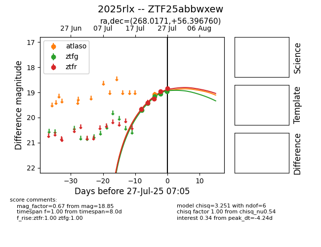

Target 2025rlx at 2025-07-27 07:05, see:
FINK: fink-portal.org/2025rlx
Lasair: lasair-ztf.lsst.ac.uk/objects/2025rlx
ALeRCE: alerce.online/object/2025rlx
TNS: wis-tns.org/object/2025rlx
YSE: ziggy.ucolick.org/yse/transient_detail/2025rlx
alt names
ZTF25abbwxew (ztf,fink)
2025rlx (tns,yse)
coordinates:
equatorial (ra, dec) = (268.0171,+56.39676)
galactic (l, b) = (84.6000,+30.39494)
photometry
last atlaso=19.07, ztfg=18.96, ztfr=18.85
1 atlaso, 5 ztfg, 5 ztfr detections
